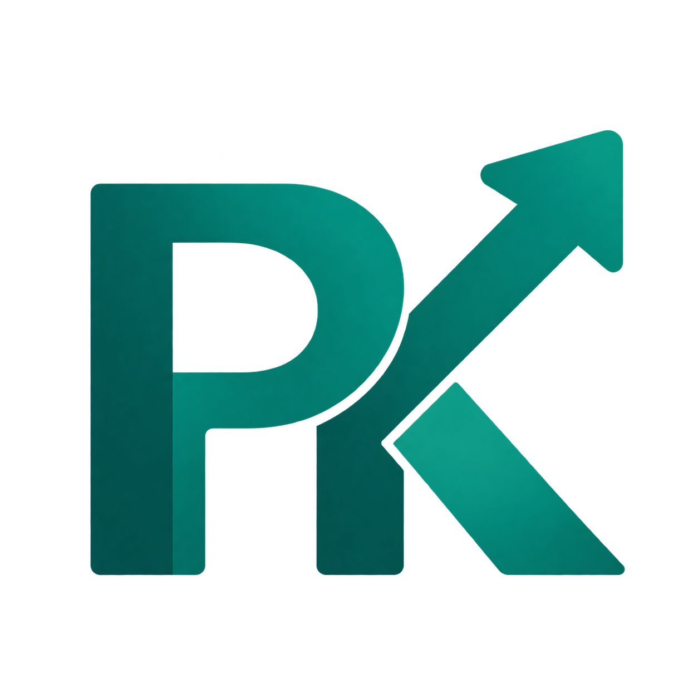

Temel kampüs
Ana sayfa, MEB form kataloğu, kütüphane.

PDRKampüsPDR KAMPÜS
PDR Kampüs’ün bugün sundukları ve sonraki aşamaları.
KAMPÜSÜN YOL HARİTASI
Ana sayfa, MEB form kataloğu, kütüphane.
Belge yükleme ve inceleme akışı, moderasyonlu Topluluk ve Meslektaşıma Sor.
Profil ve kişisel çalışma alanı.